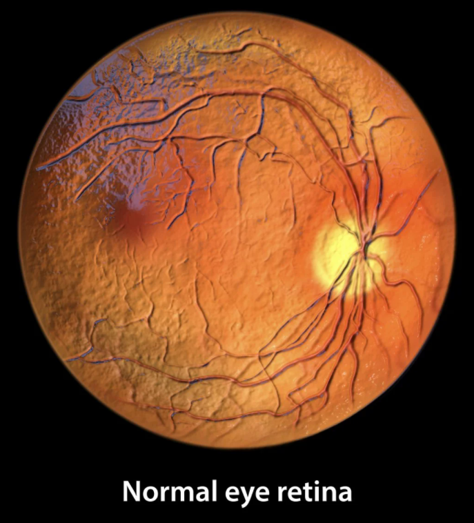
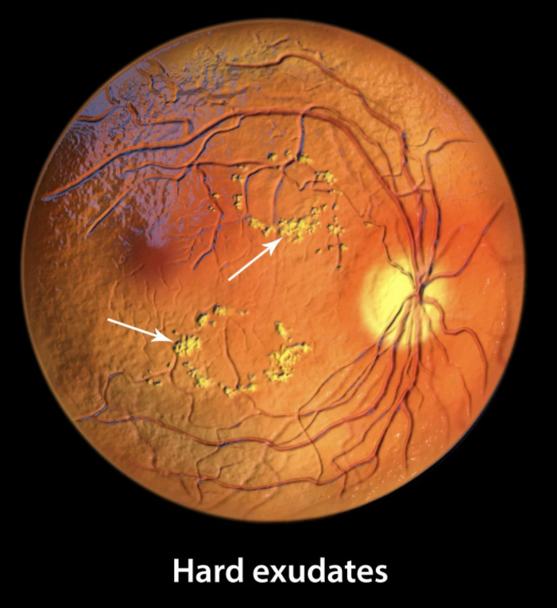

<!DOCTYPE html>
<html lang="en">
<head>
  <meta charset="UTF-8" />
  <meta name="viewport" content="width=device-width, initial-scale=1.0" />
  <title>DR-KANTreeNet | Research Portfolio</title>

  <script src="https://cdn.tailwindcss.com"></script>
  <link href="https://cdnjs.cloudflare.com/ajax/libs/font-awesome/6.0.0/css/all.min.css" rel="stylesheet" />
  <link href="https://fonts.googleapis.com/css2?family=Inter:wght@300;400;600;700&display=swap" rel="stylesheet" />

  <!-- Babel for in-browser JSX transformation -->
  <script src="https://unpkg.com/@babel/standalone/babel.min.js"></script>

  <style>
    body {
      font-family: 'Inter', sans-serif;
      background-color: #0f172a; /* slate-900 */
      color: #e2e8f0; /* slate-200 */
    }
    /* Custom Scrollbar */
    ::-webkit-scrollbar { width: 8px; }
    ::-webkit-scrollbar-track { background: #1e293b; }
    ::-webkit-scrollbar-thumb { background: #0ea5e9; border-radius: 4px; }
    ::-webkit-scrollbar-thumb:hover { background: #0284c7; }

    .glass-panel {
      background: rgba(30, 41, 59, 0.7);
      backdrop-filter: blur(10px);
      border: 1px solid rgba(255, 255, 255, 0.1);
    }
    .gradient-text {
      background: linear-gradient(to right, #22d3ee, #818cf8);
      -webkit-background-clip: text;
      -webkit-text-fill-color: transparent;
    }
  </style>

  <script type="importmap">
    {
      "imports": {
        "react": "https://esm.sh/react@^18.2.0",
        "react-dom/client": "https://esm.sh/react-dom@^18.2.0/client",
        "@google/genai": "https://esm.sh/@google/genai@^1.33.0",
        "react-dom/": "https://esm.sh/react-dom@^19.2.1/"
      }
    }
  </script>
</head>

<body>
  <div id="root"></div>

  <script type="text/babel" data-type="module">
    import React, { useState, useEffect, useRef } from "react";
    import { createRoot } from "react-dom/client";
    import { GoogleGenAI } from "@google/genai";

    // --- Project Data (Context for AI & Display) ---
    const PROJECT_DETAILS = {
      title: "DR-KANTreeNet",
      subtitle: "Diabetic Retinopathy Classification via Kolmogorov-Arnold Tree Networks",
      abstract:
        "Diabetic Retinopathy (DR) is a leading cause of blindness. Traditional CNNs suffer from a lack of interpretability and struggle with the fine-grained feature discrimination required for early DR stages. This project proposes DR-KANTreeNet, a hybrid architecture combining Kolmogorov-Arnold Networks (KANs) for adaptive feature extraction with a Differentiable Neural Decision Tree (DNDT) head for transparent classification.",
      motivation: [
        {
          title: "Black Box Paradox",
          content:
            "Deep Learning models achieve high accuracy but lack transparency. In healthcare, a 'trust me' prediction is insufficient; clinicians need the 'why' behind a diagnosis.",
          icon: "fa-box-open",
        },
        {
          title: "Feature Nuance",
          content:
            "Early DR signs like microaneurysms are minute, pixel-level anomalies. Standard CNNs often lose these fine-grained details during pooling operations.",
          icon: "fa-microscope",
        },
        {
          title: "The KAN Advantage",
          content:
            "Kolmogorov-Arnold Networks learn activation functions on edges, offering superior function approximation for complex biological patterns with fewer parameters than MLPs.",
          icon: "fa-network-wired",
        },
      ],
      stack: ["PyTorch", "Python 3.9", "OpenCV", "Scikit-Learn", "APTOS 2019 Dataset"],
      results: {
        accuracy: "86.18%",
        auc: "0.9714",
        f1: "0.8620",
        kappa: "0.9116",
        comparison: [
          { model: "DL (Rakhlin, 2017)", auc: "-", acc: "82.5", f1: "80.3", kappa: "89.5" },
          { model: "CANet (Li et al., 2019a)", auc: "-", acc: "83.2", f1: "81.3", kappa: "90.0" },
          { model: "DANIL (Gong et al., 2020)", auc: "-", acc: "83.8", f1: "67.2", kappa: "-" },
          { model: "ResNet34 (He et al., 2016)", auc: "96.0", acc: "82.4", f1: "81.5", kappa: "88.1" },
          { model: "GREEN-SE-ResNet50 (Liu, 2020)", auc: "-", acc: "85.7", f1: "85.2", kappa: "91.2" },
          { model: "ViT (Dosovitskiy et al., 2020)", auc: "95.8", acc: "81.5", f1: "80.5", kappa: "88.3" },
          { model: "Swin (Liu et al., 2021)", auc: "96.0", acc: "83.7", f1: "83.0", kappa: "90.6" },
          { model: "TransMIL (Shao et al., 2021)", auc: "97.4", acc: "82.5", f1: "82.9", kappa: "91.5" },
          { model: "MIL-ViT (Bi et al., 2023)", auc: "97.1", acc: "83.2", f1: "84.0", kappa: "91.1" },
          { model: "MIL-ViTa", auc: "98.1", acc: "85.8", f1: "85.5", kappa: "92.3" },
          { model: "Graph-DR (Akter et al., 2025)", auc: "-", acc: "96.02", f1: "96.02", kappa: "95.03" },
          {
            model: "DR-KANTreeNet (Ours)",
            auc: "97.1",
            acc: "86.2",
            f1: "86.2",
            kappa: "91.2",
            highlight: true,
            bestMetrics: ["acc", "f1"],
          },
        ],
      },
    };

    // --- Gemini AI Configuration ---
    const SYSTEM_INSTRUCTION = `You are the AI Research Assistant for the project "DR-KANTreeNet".
Your goal is to explain the project to visitors.
Here are the project details:
${JSON.stringify(PROJECT_DETAILS)}

Key Technical Points:
1. Replaces standard MLP layers with KAN layers (learnable activations on edges).
2. Uses a Neural Decision Tree at the end for class routing, making decisions traceable.
3. Dataset: APTOS 2019 (Blindness Detection).
4. Preprocessing: CLAHE (Contrast Limited Adaptive Histogram Equalization) and Gaussian Filtering.

Answer questions concisely, professionally, and enthusiastically. If asked about code, describe the logical structure.`;

    // --- Components ---
    const Navigation = () => (
      <nav className="fixed top-0 w-full z-50 glass-panel border-b border-slate-700">
        <div className="max-w-7xl mx-auto px-4 sm:px-6 lg:px-8">
          <div className="flex items-center justify-between h-16">
            <div className="flex items-center">
              <span className="text-xl font-bold tracking-tight text-white">
                DR-<span className="text-cyan-400">KANTreeNet</span>
              </span>
            </div>
            <div className="hidden md:block">
              <div className="ml-10 flex items-baseline space-x-4">
                {["Motivation", "Approach", "Implementation", "Results", "Discussion"].map((item) => (
                  <a
                    key={item}
                    href={`#${item.toLowerCase()}`}
                    className="text-slate-300 hover:text-white px-3 py-2 rounded-md text-sm font-medium transition-colors"
                  >
                    {item}
                  </a>
                ))}
              </div>
            </div>
          </div>
        </div>
      </nav>
    );

    const Hero = () => (
      <header className="relative pt-32 pb-20 lg:pt-48 lg:pb-32 overflow-hidden">
        <div className="relative max-w-7xl mx-auto px-4 sm:px-6 lg:px-8 text-center z-10">
          <div className="inline-flex items-center px-3 py-1 rounded-full border border-cyan-500/30 bg-cyan-500/10 text-cyan-300 text-xs font-medium mb-6">
            <i className="fas fa-code-branch mr-2"></i> v1.0 Release
          </div>
          <h1 className="text-5xl md:text-7xl font-extrabold tracking-tight text-white mb-6">
            Interpretable Vision for <br />
            <span className="gradient-text">Diabetic Retinopathy</span>
          </h1>
          <p className="mt-4 max-w-2xl mx-auto text-xl text-slate-400">{PROJECT_DETAILS.subtitle}</p>
          <div className="mt-8 flex justify-center gap-4">
            <a
              href="#results"
              className="px-8 py-3 rounded-lg bg-cyan-600 hover:bg-cyan-500 text-white font-semibold transition-all shadow-[0_0_20px_rgba(8,145,178,0.5)]"
            >
              View Results
            </a>
            <a
              href="#approach"
              className="px-8 py-3 rounded-lg glass-panel hover:bg-slate-800 text-white font-semibold transition-all"
            >
              How it Works
            </a>
          </div>
        </div>

        {/* Background Decorative Elements */}
        <div className="absolute top-0 left-0 w-full h-full overflow-hidden -z-10">
          <div className="absolute top-1/4 left-1/4 w-96 h-96 bg-cyan-500/10 rounded-full blur-3xl animate-pulse"></div>
          <div className="absolute bottom-1/4 right-1/4 w-96 h-96 bg-emerald-500/10 rounded-full blur-3xl"></div>
        </div>
      </header>
    );

    const Motivation = () => (
      <section id="motivation" className="py-24 bg-slate-900">
        <div className="max-w-7xl mx-auto px-4 sm:px-6 lg:px-8">
          {/* Section Header */}
          <div className="text-center mb-20">
            <h2 className="text-3xl md:text-4xl font-bold text-white mb-4">The Imperative for Innovation</h2>
            <div className="w-20 h-1 bg-cyan-500 mx-auto rounded-full"></div>
            <p className="mt-6 text-slate-400 max-w-2xl mx-auto text-lg">
              Bridging the gap between silent pathology and automated detection through Computer Vision.
            </p>
          </div>

          {/* Part 1: Clinical Dangers & Visual Comparison */}
          <div className="bg-slate-800/50 rounded-3xl border border-slate-700 overflow-hidden mb-20">
            <div className="grid grid-cols-1 lg:grid-cols-2">
              {/* Text Content */}
              <div className="p-8 md:p-12 flex flex-col justify-center">
                <div className="inline-flex items-center gap-2 text-red-400 font-bold tracking-wider text-xs uppercase mb-4">
                  <i className="fas fa-search"></i> Visual Biomarkers
                </div>
                <h3 className="text-2xl md:text-3xl font-bold text-white mb-6">
                  Distinguishing the <br />
                  <span className="text-cyan-400">Pathological Patterns</span>
                </h3>
                <p className="text-slate-300 leading-relaxed mb-6">
                  Diabetic Retinopathy disrupts the retina&apos;s healthy vascular structure. The disease manifests as
                  distinct visual anomalies—<strong>hard exudates</strong> (lipid deposits) and hemorrhages—which create
                  pixel-level contrasts against the retina.
                </p>
                <p className="text-slate-400 text-sm mb-6 border-l-2 border-cyan-500 pl-4 italic">
                  &quot;It is this exact visual distinction that enables us to employ Computer Vision. By training
                  KANTreeNet to recognize these specific textures and color gradients, we can automate screening with
                  superhuman consistency.&quot;
                </p>

                <div className="space-y-4">
                  <div className="flex gap-4 items-center">
                    <div className="w-8 h-8 rounded bg-emerald-500/10 border border-emerald-500/30 flex items-center justify-center text-emerald-400">
                      <i className="fas fa-check"></i>
                    </div>
                    <span className="text-slate-300 text-sm">Healthy: Clear vessels, uniform macula.</span>
                  </div>
                  <div className="flex gap-4 items-center">
                    <div className="w-8 h-8 rounded bg-red-500/10 border border-red-500/30 flex items-center justify-center text-red-400">
                      <i className="fas fa-times"></i>
                    </div>
                    <span className="text-slate-300 text-sm">Affected: Yellow lipid exudates, dark hemorrhages.</span>
                  </div>
                </div>
              </div>

              {/* Visual Content: Comparison */}
              <div className="relative h-full min-h-[400px] bg-slate-900 p-4 md:p-8 flex flex-col justify-center">
                <div className="grid grid-cols-2 gap-4">
                  {/* Normal Eye */}
                  <div className="relative aspect-square rounded-xl overflow-hidden group border border-emerald-500/30 shadow-lg shadow-emerald-900/20">
                    
                    <div className="absolute bottom-0 w-full bg-slate-900/80 backdrop-blur-sm py-2 text-center">
                      <span className="text-xs font-bold text-emerald-400 uppercase tracking-widest">Normal Retina</span>
                    </div>
                  </div>

                  {/* DR Eye with Annotations */}
                  <div className="relative aspect-square rounded-xl overflow-hidden group border border-red-500/30 shadow-lg shadow-red-900/20">
                    

                    {/* CV Detection Simulation Overlay */}
                    <div className="absolute top-[30%] right-[35%] w-12 h-12 rounded-full border-2 border-yellow-400/80 animate-[ping_2s_infinite]"></div>
                    <div className="absolute bottom-[40%] left-[30%] w-8 h-8 rounded-full border-2 border-yellow-400/80 animate-[ping_2.5s_infinite]"></div>

                    <div className="absolute bottom-0 w-full bg-slate-900/80 backdrop-blur-sm py-2 text-center">
                      <span className="text-xs font-bold text-red-400 uppercase tracking-widest">Hard Exudates</span>
                    </div>
                  </div>
                </div>

                <div className="text-center mt-6">
                  <span className="inline-block px-3 py-1 bg-slate-800 rounded-full text-xs text-slate-500 border border-slate-700">
                    <i className="fas fa-robot mr-2 text-cyan-500"></i> AI Target Features
                  </span>
                </div>
              </div>
            </div>
          </div>

          {/* Part 2: Technical Motivation Cards */}
          <div className="text-center mb-10">
            <h3 className="text-2xl font-bold text-white">Why KANTreeNet?</h3>
            <p className="text-slate-400 text-sm mt-2">Solving the limitations of traditional Deep Learning</p>
          </div>

          <div className="grid grid-cols-1 md:grid-cols-3 gap-8">
            {PROJECT_DETAILS.motivation.map((item, idx) => (
              <div
                key={idx}
                className="p-8 rounded-2xl bg-slate-800 border border-slate-700 hover:border-cyan-500/50 hover:bg-slate-800/80 transition-all duration-300 group"
              >
                <div className="w-14 h-14 rounded-xl bg-slate-700/50 flex items-center justify-center text-cyan-400 mb-6 group-hover:scale-110 group-hover:bg-cyan-500/10 transition-all">
                  <i className={`fas ${item.icon} text-2xl`}></i>
                </div>
                <h3 className="text-xl font-bold text-white mb-3">{item.title}</h3>
                <p className="text-slate-400 leading-relaxed text-sm">{item.content}</p>
              </div>
            ))}
          </div>
        </div>
      </section>
    );

    // --- Pipeline Steps (keep ONLY ONE definition) ---
    const PIPELINE_STEPS = [
      {
        id: 1,
        title: "Original Fundus Image",
        subtitle: "Input Data",
        desc: "Original DR image read from disk.",
        details:
          "High-resolution retinal scan captured via fundus photography. Contains raw pixel data including noise and varying lighting conditions that must be processed.",
        type: "image",
        filter: "none",
      },
      {
        id: 2,
        title: "Resized to (448x448)",
        subtitle: "Preprocessing",
        desc: "Resized to model input size and normalized.",
        details:
          "Standardization of input dimensions ensures consistent feature extraction across different camera types. Color normalization reduces lighting variance.",
        type: "image",
        filter: "contrast(1.2) brightness(1.1)",
      },
      {
        id: 3,
        title: "Vessel Tree Branch",
        subtitle: "VesselTreeNet",
        desc: "Extract vessel-like structures from green channel, input to EnhancedVesselTreeNet.",
        details:
          "The green channel offers the best contrast for blood vessels. A specialized U-Net variant segments the vascular tree to identify structural anomalies.",
        type: "mask",
      },
      {
        id: 4,
        title: "Lesion Attention",
        subtitle: "Feature Extraction",
        desc: "ResNet high-level features + original image, automatically focus on suspected lesion regions.",
        details:
          "Class Activation Maps (CAM) highlight areas contributing most to the initial feature extraction, pinpointing potential microaneurysms and hemorrhages.",
        type: "heatmap-lesion",
      },
      {
        id: 5,
        title: "DAM Enhanced Local",
        subtitle: "Discriminative Attention",
        desc: "KANDAM module further enhances discriminative textures and local structures.",
        details:
          "Kolmogorov-Arnold Network Discriminative Attention Module (KANDAM) uses learnable activation functions to refine features and distinguish hard exudates from optic disc artifacts.",
        type: "heatmap-dam",
      },
      {
        id: 6,
        title: "ViT-S Global Context",
        subtitle: "Vision Transformer",
        desc: "Global attention heatmap based on ViT-S patch token norms.",
        details:
          "Vision Transformer (ViT-Small) processes the image as patches, capturing long-range dependencies and global retinal health context missed by local convolutions.",
        type: "heatmap-vit",
      },
      {
        id: 7,
        title: "Prediction: Severe",
        subtitle: "Differentiable Decision Tree",
        desc: "Final probability distribution across severity classes.",
        details:
          "The Differentiable Neural Decision Tree aggregates features from all branches to output a transparent, probabilistic diagnosis.",
        type: "chart",
      },
    ];

    const Approach = () => {
      const [activeStep, setActiveStep] = useState(0);
      const [isPlaying, setIsPlaying] = useState(false);

      useEffect(() => {
        let interval;
        if (isPlaying) {
          interval = setInterval(() => {
            setActiveStep((prev) => (prev + 1) % PIPELINE_STEPS.length);
          }, 3000);
        }
        return () => clearInterval(interval);
      }, [isPlaying]);

      const step = PIPELINE_STEPS[activeStep];

      return (
        <section id="approach" className="py-24 bg-slate-950 relative overflow-hidden">
          <div className="max-w-7xl mx-auto px-4 sm:px-6 lg:px-8">
            {/* Section Header */}
            <div className="mb-12">
              <h2 className="text-3xl md:text-4xl font-bold text-white mb-4">
                How It Works: The Pipeline
              </h2>
              <p className="text-slate-400 text-lg max-w-2xl">
                A step-by-step breakdown of how DR-KANTreeNet processes a retinal scan, from raw input to final diagnosis.
              </p>
            </div>

            {/* Architecture Diagram */}
            <div className="mb-12 bg-slate-900 rounded-2xl border border-slate-800 overflow-hidden">
              <div className="p-4 md:p-6 border-b border-slate-800 flex items-center justify-between">
                <div className="text-white font-semibold">
                  <i className="fas fa-sitemap mr-2 text-cyan-400"></i>
                  Enhanced DR-KANTreeNet Architecture
                </div>
                <a
                  href="diagram.png?v=1"
                  target="_blank"
                  rel="noreferrer"
                  className="text-xs text-slate-400 hover:text-white border border-slate-700 px-3 py-1 rounded-full"
                >
                  Open image
                </a>
              </div>

              <div className="p-3 md:p-6 bg-black">
                 {
                    const el = document.getElementById("diagram-error");
                    if (el) el.classList.remove("hidden");
                    console.error("Failed to load diagram.png. Verify it exists at /CS566-Website/diagram.png");
                  }}
                />

                {/* Text explanation BELOW the image */}
                <div className="mt-4 p-4 rounded-xl bg-slate-900/60 border border-slate-800 space-y-2 text-slate-300 text-sm leading-relaxed">
                  <p>
                    <span className="font-semibold text-cyan-300">The Detail Expert:</span>{" "}
                    Hunts for tiny red dots and hemorrhages using a &quot;zoom lens&quot; (ResNet + Lesion Attention).
                  </p>
                  <p>
                    <span className="font-semibold text-cyan-300">The Big-Picture Expert:</span>{" "}
                    Looks at the overall health of the retina using two global scanners (Dual ViT) to spot widespread damage.
                  </p>
                  <p>
                    <span className="font-semibold text-cyan-300">The Vessel Expert:</span>{" "}
                    Traces the &quot;tree&quot; of blood vessels to check for twisting or leakage, which are key signs of the disease.
                  </p>
                </div>

                {/* Error message (only shown if image fails to load) */}
                <p
                  id="diagram-error"
                  className="hidden mt-3 text-sm text-red-300 bg-red-500/10 border border-red-500/30 rounded-lg p-3"
                >
                  diagram.png failed to load. Please ensure <code>diagram.png</code> is in the same directory as{" "}
                  <code>index.html</code> on GitHub Pages (and filename casing matches exactly).
                </p>
              </div>
            </div>

            <div className="grid grid-cols-1 lg:grid-cols-12 gap-8 lg:gap-12">
              {/* Left: Navigation / List */}
              <div className="lg:col-span-4 flex flex-col h-full">
                <div className="bg-slate-900 rounded-xl border border-slate-800 overflow-hidden flex-1 flex flex-col">
                  <div className="p-4 border-b border-slate-800 bg-slate-800/50 flex justify-between items-center">
                    <span className="text-xs font-bold text-slate-400 uppercase tracking-widest">Processing Steps</span>
                    <button
                      onClick={() => setIsPlaying(!isPlaying)}
                      className={`text-xs px-3 py-1 rounded-full border transition-all ${
                        isPlaying
                          ? "border-red-500 text-red-400 hover:bg-red-500/10"
                          : "border-emerald-500 text-emerald-400 hover:bg-emerald-500/10"
                      }`}
                    >
                      <i className={`fas ${isPlaying ? "fa-pause" : "fa-play"} mr-1`}></i>{" "}
                      {isPlaying ? "Pause" : "Auto Play"}
                    </button>
                  </div>

                  <div className="flex-1 overflow-y-auto">
                    {PIPELINE_STEPS.map((s, idx) => (
                      <button
                        key={s.id}
                        onClick={() => {
                          setActiveStep(idx);
                          setIsPlaying(false);
                        }}
                        className={`w-full text-left p-4 border-b border-slate-800/50 transition-all hover:bg-slate-800 ${
                          activeStep === idx
                            ? "bg-slate-800/80 border-l-4 border-l-cyan-500"
                            : "border-l-4 border-l-transparent"
                        }`}
                      >
                        <div className="flex justify-between items-start mb-1">
                          <span
                            className={`text-xs font-bold uppercase tracking-wider ${
                              activeStep === idx ? "text-cyan-400" : "text-slate-500"
                            }`}
                          >
                            Step {s.id}
                          </span>
                          {activeStep === idx && (
                            <i className="fas fa-chevron-right text-cyan-500 text-xs animate-pulse"></i>
                          )}
                        </div>
                        <h4 className={`font-semibold ${activeStep === idx ? "text-white" : "text-slate-400"}`}>
                          {s.title}
                        </h4>
                      </button>
                    ))}
                  </div>
                </div>
              </div>

              {/* Right: Visualization Stage */}
              <div className="lg:col-span-8">
                <div className="bg-black rounded-2xl border border-slate-700 shadow-2xl overflow-hidden relative aspect-[4/3] md:aspect-video flex flex-col">
                  <div className="relative flex-1 bg-slate-900 flex items-center justify-center overflow-hidden">
                    {/* Base Image */}
                    {step.type !== "chart" && step.type !== "mask" && (
                      
                    )}

                    {/* Vessel Mask */}
                    {step.type === "mask" && (
                      <div className="absolute inset-0 bg-black">
                        
                      </div>
                    )}

                    {/* Heatmaps */}
                    {step.type.includes("heatmap") && (
                      <div
                        className={`absolute inset-0 opacity-60 mix-blend-overlay bg-gradient-to-tr transition-all duration-1000
                        ${
                          step.type === "heatmap-lesion"
                            ? "from-transparent via-yellow-500 to-red-600"
                            : step.type === "heatmap-dam"
                            ? "from-blue-500 via-transparent to-emerald-500"
                            : "from-purple-600 via-red-400 to-transparent"
                        }`}
                        style={{
                          backgroundSize: step.type === "heatmap-vit" ? "20% 20%" : "100% 100%",
                          backgroundImage:
                            step.type === "heatmap-vit"
                              ? "radial-gradient(circle, rgba(255,0,0,0.8) 0%, rgba(0,0,0,0) 70%)"
                              : undefined,
                        }}
                      ></div>
                    )}

                    {/* Chart */}
                    {step.type === "chart" && (
                      <div className="w-full h-full bg-slate-900 p-8 flex items-end justify-center gap-4 md:gap-8 pb-16">
                        {[
                          { label: "No DR", val: 18, h: "18%" },
                          { label: "Mild", val: 7, h: "7%" },
                          { label: "Moderate", val: 21, h: "21%" },
                          { label: "Severe", val: 36, h: "36%", active: true },
                          { label: "Proliferative", val: 16, h: "16%" },
                        ].map((bar, i) => (
                          <div key={i} className="flex flex-col items-center gap-2 group w-full max-w-[80px]">
                            <span className={`text-xs md:text-sm font-bold ${bar.active ? "text-cyan-400" : "text-slate-500"}`}>
                              {bar.val / 100}
                            </span>
                            <div className="w-full bg-slate-800 rounded-t-lg relative overflow-hidden h-48 md:h-64 flex items-end">
                              <div
                                className={`w-full transition-all duration-1000 ${bar.active ? "bg-cyan-500" : "bg-slate-600"}`}
                                style={{ height: bar.h }}
                              ></div>
                            </div>
                            <span className="text-[10px] md:text-xs text-slate-400 text-center">{bar.label}</span>
                          </div>
                        ))}
                      </div>
                    )}

                    {/* Step Info */}
                    <div className="absolute bottom-0 w-full bg-black/80 backdrop-blur-md p-6 border-t border-slate-700">
                      <div>
                        <div className="flex items-center gap-2 mb-1">
                          <span className="text-cyan-400 text-xs font-bold uppercase">{step.subtitle}</span>
                          <span className="text-slate-600 text-xs">|</span>
                          <span className="text-slate-400 text-xs">Frame 0{step.id}</span>
                        </div>
                        <h3 className="text-xl text-white font-bold mb-2">{step.title}</h3>
                        <p className="text-slate-300 text-sm max-w-3xl">{step.desc}</p>
                        <p className="text-slate-500 text-xs mt-2 italic border-l-2 border-slate-700 pl-3">
                          {step.details}
                        </p>
                      </div>
                    </div>

                    {/* Progress Bar */}
                    <div className="absolute top-0 left-0 w-full h-1 bg-slate-800">
                      <div
                        className="h-full bg-cyan-500 transition-all duration-300"
                        style={{ width: `${((activeStep + 1) / PIPELINE_STEPS.length) * 100}%` }}
                      ></div>
                    </div>
                  </div>
                </div>
              </div>

            </div>
          </div>
        </section>
      );
    };

    const Implementation = () => (
      <section id="implementation" className="py-20 bg-slate-900">
        <div className="max-w-7xl mx-auto px-4 sm:px-6 lg:px-8">
          <h2 className="text-3xl font-bold text-white mb-12 text-center">Implementation Details</h2>

          <div className="grid grid-cols-1 md:grid-cols-2 gap-8">
            {/* Code Snippet */}
            <div className="bg-[#1e1e1e] rounded-xl overflow-hidden shadow-2xl border border-slate-700 font-mono text-sm">
              <div className="bg-[#252526] px-4 py-2 flex items-center gap-2 border-b border-black">
                <div className="w-3 h-3 rounded-full bg-red-500"></div>
                <div className="w-3 h-3 rounded-full bg-yellow-500"></div>
                <div className="w-3 h-3 rounded-full bg-green-500"></div>
                <span className="ml-2 text-slate-400 text-xs">model.py</span>
              </div>
              <div className="p-4 text-slate-300 overflow-x-auto">
                <pre>{`class KANTreeNet(nn.Module):
    def __init__(self, num_classes=5):
        super().__init__()
        # KAN Feature Extractor
        self.features = KANLayer(
            in_features=2048,
            hidden=512
        )

        # Differentiable Tree Head
        self.tree = NeuralDecisionTree(
            depth=4,
            classes=num_classes
        )

    def forward(self, x):
        features = self.features(x)
        return self.tree(features)`}</pre>
              </div>
            </div>

            {/* Tech Stack */}
            <div className="grid grid-cols-2 gap-4">
              <div className="p-6 bg-slate-800 rounded-xl border border-slate-700">
                <h3 className="text-white font-semibold mb-4">Dataset</h3>
                <div className="flex items-center gap-3 mb-2">
                  <i className="fas fa-database text-cyan-400"></i>
                  <span className="text-slate-300">APTOS 2019</span>
                </div>
                <p className="text-sm text-slate-500">3,662 retina images. Class imbalance handled via SMOTE.</p>
              </div>

              <div className="p-6 bg-slate-800 rounded-xl border border-slate-700">
                <h3 className="text-white font-semibold mb-4">Preprocessing</h3>
                <ul className="text-sm text-slate-400 space-y-2">
                  <li><i className="fas fa-angle-right text-emerald-400 mr-2"></i>Resize to 448x448</li>
                  <li><i className="fas fa-angle-right text-emerald-400 mr-2"></i>CLAHE Enhancement</li>
                  <li><i className="fas fa-angle-right text-emerald-400 mr-2"></i>Circle Crop</li>
                </ul>
              </div>

              <div className="col-span-2 p-6 bg-slate-800 rounded-xl border border-slate-700">
                <h3 className="text-white font-semibold mb-4">Stack</h3>
                <div className="flex gap-4 flex-wrap">
                  {PROJECT_DETAILS.stack.map((tech) => (
                    <span key={tech} className="px-3 py-1 bg-slate-700 rounded-full text-xs text-cyan-300 border border-slate-600">
                      {tech}
                    </span>
                  ))}
                </div>
              </div>
            </div>

          </div>
        </div>
      </section>
    );

    const Results = () => (
      <section id="results" className="py-20 bg-slate-950">
        <div className="max-w-7xl mx-auto px-4 sm:px-6 lg:px-8">
          <h2 className="text-3xl font-bold text-white mb-12 text-center">Experimental Results</h2>

          {/* Top Metrics Cards */}
          <div className="grid grid-cols-2 md:grid-cols-4 gap-4 mb-12">
            {[
              { label: "Accuracy", value: PROJECT_DETAILS.results.accuracy, icon: "fa-bullseye", color: "text-cyan-400", border: "border-cyan-500/30" },
              { label: "AUC Score", value: PROJECT_DETAILS.results.auc, icon: "fa-chart-area", color: "text-emerald-400", border: "border-emerald-500/30" },
              { label: "F1 Score", value: PROJECT_DETAILS.results.f1, icon: "fa-balance-scale", color: "text-purple-400", border: "border-purple-500/30" },
              { label: "Kappa", value: PROJECT_DETAILS.results.kappa, icon: "fa-check-double", color: "text-amber-400", border: "border-amber-500/30" },
            ].map((m, i) => (
              <div key={i} className={`bg-slate-900 p-6 rounded-xl border ${m.border} text-center group hover:bg-slate-800 transition-colors`}>
                <div className="text-3xl font-bold text-white mb-2 group-hover:scale-110 transition-transform inline-block">
                  {m.value}
                </div>
                <div className={`text-xs font-bold uppercase tracking-wider ${m.color}`}>
                  <i className={`fas ${m.icon} mr-2`}></i>{m.label}
                </div>
              </div>
            ))}
          </div>

          <div className="grid grid-cols-1 lg:grid-cols-3 gap-8">
            {/* Performance Table */}
            <div className="lg:col-span-3 bg-slate-900 rounded-xl border border-slate-800 p-6">
              <div className="flex justify-between items-center mb-6">
                <h3 className="text-xl font-semibold text-white">Comparative Analysis on APTOS 2019</h3>
                <span className="text-xs text-slate-500 bg-slate-800 px-2 py-1 rounded border border-slate-700">Metrics in % (scaled)</span>
              </div>

              <div className="overflow-x-auto">
                <table className="w-full text-left border-collapse">
                  <thead>
                    <tr className="border-b border-slate-800">
                      <th className="py-4 px-4 text-slate-400 font-medium text-sm uppercase">Method</th>
                      <th className="py-4 px-4 text-slate-400 font-medium text-sm uppercase text-right">AUC</th>
                      <th className="py-4 px-4 text-slate-400 font-medium text-sm uppercase text-right">ACC</th>
                      <th className="py-4 px-4 text-slate-400 font-medium text-sm uppercase text-right">F1</th>
                      <th className="py-4 px-4 text-slate-400 font-medium text-sm uppercase text-right">Kappa</th>
                    </tr>
                  </thead>

                  <tbody>
                    {PROJECT_DETAILS.results.comparison.map((row, i) => {
                      const isBest = (metric) => row.bestMetrics && row.bestMetrics.includes(metric);
                      return (
                        <tr
                          key={i}
                          className={`border-b border-slate-800 transition-colors hover:bg-slate-800/50 ${
                            row.highlight ? "bg-cyan-900/20 border-cyan-500/30" : ""
                          }`}
                        >
                          <td className={`py-4 px-4 ${row.highlight ? "text-cyan-400 font-bold" : "text-slate-300"}`}>
                            {row.model}
                            {row.highlight && (
                              <span className="ml-2 text-[10px] bg-cyan-500 text-white px-1.5 py-0.5 rounded-full align-middle">
                                OURS
                              </span>
                            )}
                          </td>
                          <td className={`py-4 px-4 text-right ${isBest("auc") ? "text-cyan-400 font-bold text-lg" : (row.highlight ? "text-slate-300" : "text-slate-400")}`}>{row.auc}</td>
                          <td className={`py-4 px-4 text-right ${isBest("acc") ? "text-cyan-400 font-bold text-lg" : (row.highlight ? "text-slate-300" : "text-slate-400")}`}>{row.acc}</td>
                          <td className={`py-4 px-4 text-right ${isBest("f1") ? "text-cyan-400 font-bold text-lg" : (row.highlight ? "text-slate-300" : "text-slate-400")}`}>{row.f1}</td>
                          <td className={`py-4 px-4 text-right ${isBest("kappa") ? "text-cyan-400 font-bold text-lg" : (row.highlight ? "text-slate-300" : "text-slate-400")}`}>{row.kappa}</td>
                        </tr>
                      );
                    })}
                  </tbody>
                </table>
              </div>

              <p className="mt-4 text-xs text-slate-500 italic">
                * Note: &quot;-&quot; indicates metric not reported in original paper. Comparisons sourced from recent literature.
              </p>
            </div>
          </div>

          {/* GradCAM Visuals */}
          <div className="mt-16">
            <h3 className="text-xl font-semibold text-white mb-6 text-center">Explainability Visualization (Grad-CAM)</h3>
            <div className="grid grid-cols-2 md:grid-cols-4 gap-4">
              {[1, 2, 3, 4].map((i) => (
                <div key={i} className="relative aspect-square rounded-lg overflow-hidden bg-black group">
                  <div className="absolute inset-0 bg-slate-800 flex items-center justify-center">
                    <i className="fas fa-eye text-4xl text-slate-700"></i>
                  </div>
                  <div className="absolute inset-0 bg-gradient-to-tr from-transparent via-red-500/30 to-yellow-500/40 opacity-75 mix-blend-overlay"></div>
                  <div className="absolute bottom-0 w-full p-2 bg-black/60 backdrop-blur-sm text-center">
                    <span className="text-xs text-white">Class {i}: Severity High</span>
                  </div>
                </div>
              ))}
            </div>
          </div>

        </div>
      </section>
    );

    const Footer = () => (
      <footer id="discussion" className="bg-slate-950 border-t border-slate-800 py-12">
        <div className="max-w-7xl mx-auto px-4 text-center">
          <h2 className="text-2xl font-bold text-white mb-4">Discussion & Future Work</h2>
          <p className="max-w-3xl mx-auto text-slate-400 mb-8 leading-relaxed">
            The comparative analysis demonstrates that DR-KANTreeNet achieves robust performance, matching or exceeding strong
            baselines from recent years like TransMIL and MIL-ViT in terms of accuracy and F1 score. However, it still falls
            slightly short of the latest state-of-the-art models like MIL-ViTa in AUC and Kappa metrics.
            <br /><br />
            Crucially, while MIL-ViTa optimizes purely for predictive performance, DR-KANTreeNet prioritizes <strong>clinical interpretability</strong>{" "}
            via its differentiable decision tree head. Future work will aim to close this performance gap by incorporating more
            advanced attention mechanisms while retaining the transparency that clinicians require.
          </p>
          <div className="flex justify-center space-x-6">
            <a href="#" className="text-slate-400 hover:text-white text-2xl"><i className="fab fa-github"></i></a>
            <a href="#" className="text-slate-400 hover:text-white text-2xl"><i className="fas fa-file-pdf"></i></a>
            <a href="#" className="text-slate-400 hover:text-white text-2xl"><i className="fab fa-linkedin"></i></a>
          </div>
          <p className="mt-8 text-slate-600 text-sm">© 2024 DR-KANTreeNet Project. All rights reserved.</p>
        </div>
      </footer>
    );

    // --- AI Chat Widget ---
    const ChatWidget = () => {
      const [isOpen, setIsOpen] = useState(false);
      const [messages, setMessages] = useState([
        { role: "model", text: "Hi! I am the AI assistant for DR-KANTreeNet. Ask me anything about the research!" },
      ]);
      const [input, setInput] = useState("");
      const [loading, setLoading] = useState(false);
      const scrollRef = useRef(null);
      const chatRef = useRef(null);

      useEffect(() => {
        if (scrollRef.current) scrollRef.current.scrollTop = scrollRef.current.scrollHeight;
      }, [messages, isOpen]);

      const handleSend = async () => {
        if (!input.trim() || loading) return;

        const userMsg = input;
        setInput("");
        setMessages((prev) => [...prev, { role: "user", text: userMsg }]);
        setLoading(true);

        try {
          if (!chatRef.current) {
            const ai = new GoogleGenAI({ apiKey: process.env.API_KEY });
            chatRef.current = ai.chats.create({
              model: "gemini-2.5-flash",
              config: { systemInstruction: SYSTEM_INSTRUCTION },
            });
          }

          const result = await chatRef.current.sendMessage({ message: userMsg });
          const response = result.text;
          setMessages((prev) => [...prev, { role: "model", text: response }]);
        } catch (error) {
          console.error("Chat Error:", error);
          setMessages((prev) => [
            ...prev,
            { role: "model", text: "Sorry, I encountered an error connecting to the AI. Please check your network or API Key." },
          ]);
        } finally {
          setLoading(false);
        }
      };

      return (
        <div className="fixed bottom-6 right-6 z-50 flex flex-col items-end">
          {isOpen && (
            <div className="mb-4 w-80 md:w-96 h-[500px] bg-slate-900 rounded-2xl border border-slate-700 shadow-2xl flex flex-col overflow-hidden animate-in fade-in slide-in-from-bottom-10">
              <div className="p-4 bg-slate-800 border-b border-slate-700 flex justify-between items-center">
                <div className="flex items-center gap-2">
                  <div className="w-2 h-2 rounded-full bg-cyan-400 animate-pulse"></div>
                  <span className="font-semibold text-white">Project Assistant</span>
                </div>
                <button onClick={() => setIsOpen(false)} className="text-slate-400 hover:text-white">
                  <i className="fas fa-times"></i>
                </button>
              </div>

              <div className="flex-1 overflow-y-auto p-4 space-y-4 bg-slate-900/50" ref={scrollRef}>
                {messages.map((m, i) => (
                  <div key={i} className={`flex ${m.role === "user" ? "justify-end" : "justify-start"}`}>
                    <div
                      className={`max-w-[85%] rounded-2xl px-4 py-2 text-sm ${
                        m.role === "user"
                          ? "bg-cyan-600 text-white rounded-br-none"
                          : "bg-slate-800 text-slate-200 rounded-bl-none"
                      }`}
                    >
                      {m.text}
                    </div>
                  </div>
                ))}

                {loading && (
                  <div className="flex justify-start">
                    <div className="bg-slate-800 rounded-2xl rounded-bl-none px-4 py-2 flex gap-1 items-center">
                      <div className="w-1.5 h-1.5 bg-slate-400 rounded-full animate-bounce"></div>
                      <div className="w-1.5 h-1.5 bg-slate-400 rounded-full animate-bounce" style={{ animationDelay: "0.1s" }}></div>
                      <div className="w-1.5 h-1.5 bg-slate-400 rounded-full animate-bounce" style={{ animationDelay: "0.2s" }}></div>
                    </div>
                  </div>
                )}
              </div>

              <div className="p-3 bg-slate-800 border-t border-slate-700">
                <div className="flex gap-2">
                  <input
                    type="text"
                    value={input}
                    onChange={(e) => setInput(e.target.value)}
                    onKeyDown={(e) => e.key === "Enter" && handleSend()}
                    placeholder="Ask about accuracy, model..."
                    className="flex-1 bg-slate-900 border border-slate-600 rounded-lg px-3 py-2 text-sm text-white focus:outline-none focus:border-cyan-500"
                  />
                  <button
                    onClick={handleSend}
                    disabled={loading}
                    className="p-2 bg-cyan-600 text-white rounded-lg hover:bg-cyan-500 disabled:opacity-50"
                  >
                    <i className="fas fa-paper-plane"></i>
                  </button>
                </div>
              </div>
            </div>
          )}

          <button
            onClick={() => setIsOpen(!isOpen)}
            className="w-14 h-14 rounded-full bg-gradient-to-r from-cyan-500 to-blue-600 shadow-lg shadow-cyan-500/30 flex items-center justify-center text-white text-2xl hover:scale-105 transition-transform"
          >
            <i className={`fas ${isOpen ? "fa-times" : "fa-robot"}`}></i>
          </button>
        </div>
      );
    };

    const App = () => (
      <div className="min-h-screen">
        <Navigation />
        <Hero />
        <Motivation />
        <Approach />
        <Implementation />
        <Results />
        <Footer />
        <ChatWidget />
      </div>
    );

    const root = createRoot(document.getElementById("root"));
    root.render(<App />);
  </script>
</body>
</html>
